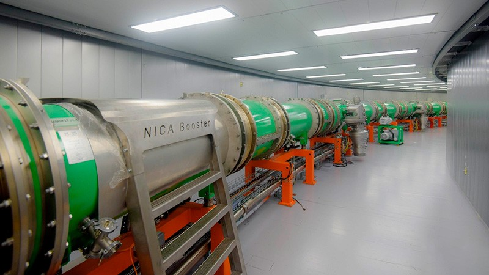

Конец этого года станет временем запуска коллайдера NICA учеными Объединенного института ядерных исследований в Дубне. Это самая масштабная установка класса мегасайенс в России, на которой уже проводятся исследования, но еще не на полной мощности.
Коллайдер будет использоваться для воссоздания состояния, в котором находилась наша Вселенная в первые мгновения своего существования. Он даст толчок развитию физики элементарных частиц, и поможет расширить наши знания в радиобиологии, космической медицине, материаловедении, переработке ядерных отходов и в других областях науки.
